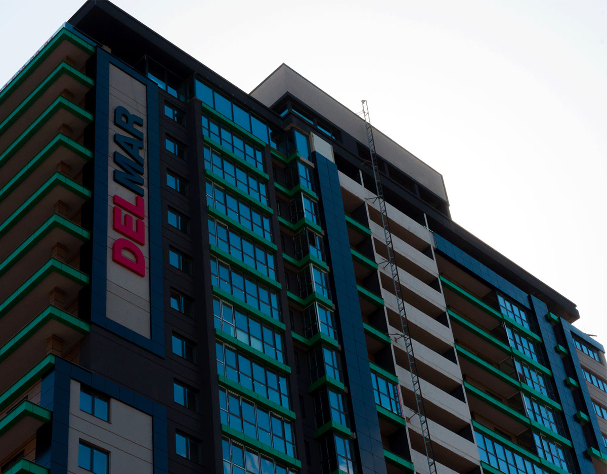

Краще один раз побачити і сто разів почути, та й хоч раз прочитати :-). Саме так ми й думаємо. Постало перед нами завдання написати щось про нас. І тут нас понесло. Потім задумалися, чи хтось читатиме наші мемуари. Словом вирішили багато не писати, а навести кілька фактів із життя нашої компанії «Кронк Строй».
Ми організувалися в 2013-му році. Відразу взяли на себе зобов'язання зробити один дуже великий об'єкт – Voomy IT-Park у місті Харків. Спочатку ставилися до нас дуже скептично. Ще б. Усі очікували, що ми привеземо зараз 30-50 людей і почнемо працювати.
Але точно ніхто й подумати не міг, що на об'єкт вийде 10 осіб. Так, ми не обманюємо, саме 10 робітників. При чому 6 з них вийшли виконувати роботи по фасадній частині та 4 особи займалися склінням будівлі. Дивлячись на об'єкт, можна подумати, що 10 осіб – це нереально.
Але складнощі нас не лякають. Та й досвід роботи показував, що більше людей тільки створять більший безлад. Загалом, взялися за роботу, дякую за повну довіру інвестору, і «вуаля», через 6 місяців об'єкт готовий до запуску.
Так саме півроку на основні роботи. Шкода, звичайно, що поки "Voomy IT-Park" поки так і не введений в експлуатацію, але ми сподіваємося, що в найближчому майбутньому ситуація, що склалася, покращиться і ми все-таки потрапимо на відкриття цього цікавого IT-центру. Докладніше про цей проект, і не тільки про це, можна почитати та й подивитися фото на вкладці «Проекти».
Як говориться далі більше і цікавіше. Завдяки швидкості та якості виконаної роботи, у нас почали з'являтися нові, не менш цікаві та великі об'єкти. З частиною наших робіт можна ознайомитись у вищезгаданому розділі «Проекти». Всі наші роботи ми просто не змогли зібрати через те, що свого часу не збирали фото об'єктів, а тепер до багатьох просто фізично немає можливості дістатися, але згодом ми виправимося.
